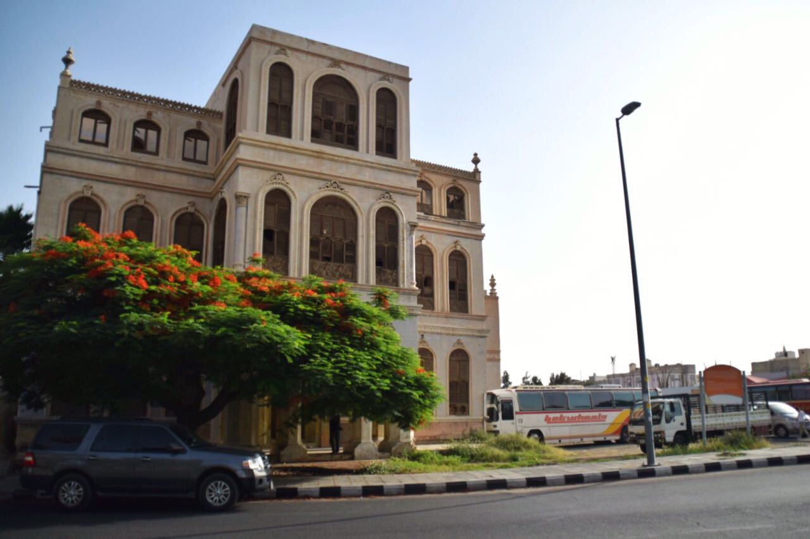
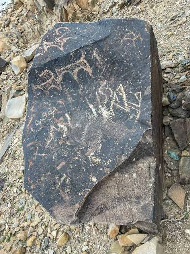
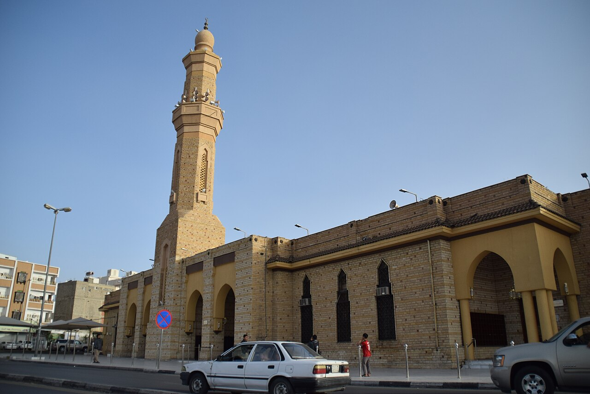
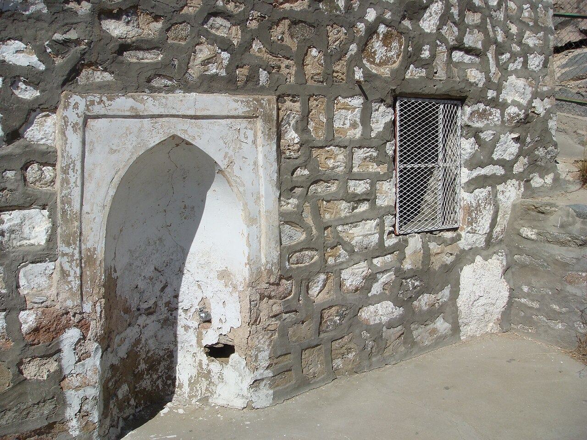
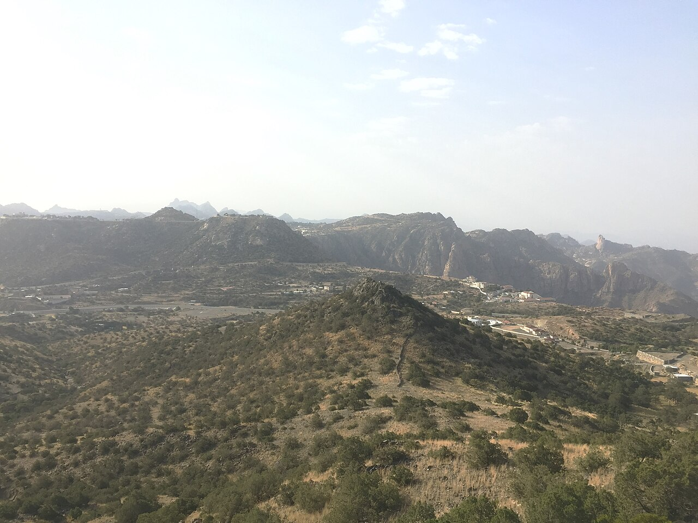
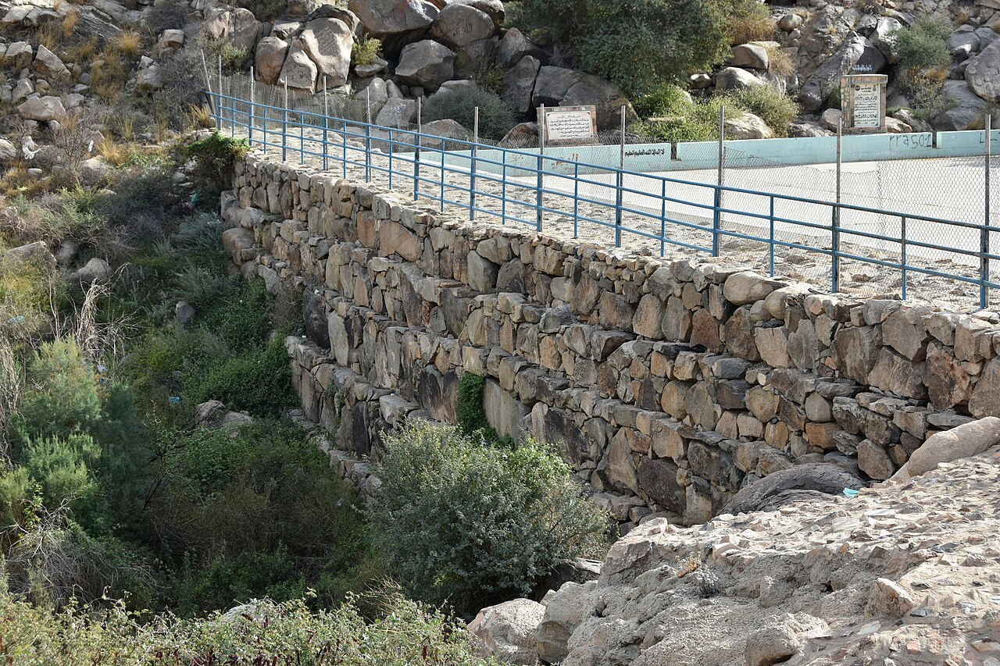
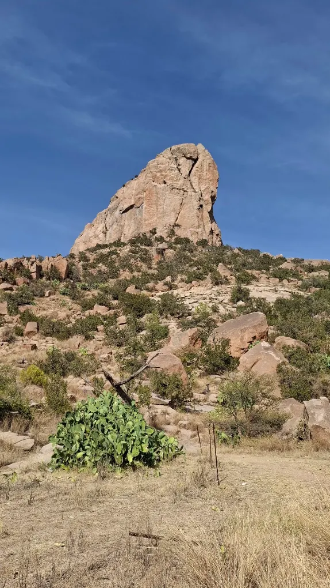

جولة الطائف: من قصر شبرا إلى جبل قرنيت
مسار سياحي كامل يمر بـ 11 محطة مرتبة جغرافياً من وسط المدينة إلى أعلى القمم، بوصف واقعي وروابط خرائط لكل محطة.

قصر شبرا — المتحف الإقليمي
قصر حجري بُني عام 1905م برواشين خشبية منحوتة وقاعات عرض تروي تاريخ الطائف والحجاز. سكنه الملك عبدالعزيز والملك فيصل، ثم أصبح متحفاً إقليمياً. القاعات تعرض آثاراً ووثائق وصوراً تاريخية تروي قصة المدينة.
📍 عرض على الخريطة
بيت الكاتب — عمارة حجازية أصيلة
قصر حجري بُني عام 1897م لمحمد بن عبدالواحد كاتب الشريف عون الرفيق. واجهات حجرية مزخرفة، ورواشين خشبية بديعة، وأعمدة حجرية — مثال حي على العمارة الحجازية التقليدية. الزيارة غالباً خارجية مع معارض موسمية داخلية.
📍 عرض على الخريطة
سوق عكاظ — الموقع الثقافي
موقع مُعاد إحياؤه للمهرجان الثقافي السنوي، على مقربة من موضع السوق الجاهلي التاريخي الذي كان ملتقى قبائل هوازن وقريش للتجارة والشعر. خارج أيام المهرجان الموقع هادئ؛ تُقام الفعاليات صيفاً وتشمل شعراً، حِرفاً، وأسواقاً تقليدية.
📍 عرض على الخريطة
النقوش الصخرية — العرفاء
مئات الصخور المنحوتة بنقوش ثمودية وإسلامية مبكرة بالخط الكوفي، منتشرة في الشعاب والجبال. ليست موقعاً واحداً مسوراً بل انتشار واسع يحتاج مرشداً محلياً وسيارة دفع رباعي للوصول إلى أهم اللوحات.
📍 عرض على الخريطة
مسجد عبدالله بن عباس
مسجد عامل بجوار مدفن عبدالله بن عباس (ت ~68هـ/687م)، حبر الأمة وترجمان القرآن الذي اختار الطائف سكناً ومدفناً. المبنى الحالي مجدد عدة مرات؛ الأهمية دينية وتاريخية وليست معمارية قديمة. الهدوء بعد الفجر هو أفضل أوقات الزيارة.
📍 عرض على الخريطة
مسجد الكوع — المعضبة
مسجد صغير على موضع يُذكر أن النبي ﷺ صلى فيه حين قدم الطائف سنة 10 للبعثة طلباً للنصرة. البناء حديث على أرض تاريخية؛ المحراب والصحن البسيط يشهدان على بساطة المكان وروحانيته.
📍 عرض على الخريطة
مزارع الورد — الهدا والشفا
حقول الورد الدمشقي الثلاثيني (Rosa damascena trigintipetala) تمتد على المدرجات الجبلية. يُقطف الورد فجراً ويُقطّر في نفس اليوم في مراجل نحاسية (الكركة) لإنتاج ماء الورد ودهن الورد المركز. التجربة الحقيقية متاحة فقط في موسم الورد (أبريل–مايو) من الفجر حتى العاشرة صباحاً. وبعضها يفتح أبوابه للزوار.
📍 عرض على الخريطة
جبل دكا — قمة الشفا
أعلى قمة حول الطائف، مكسوة بأشجار العرعر الجبلي. من القمة إطلالة بانورامية على سهول تهامة غرباً عند صفو الجو. القمة مجهزة جزئياً بمسارات وسياجات؛ الحواف خطرة والضباب مفاجئ. لا تصعد دون استعداد، وابتعد عن الحواف.
📍 عرض على الخريطة
تلفريك الهدا — الكر
تلفريك معلق ينقل الزوار من الهدا البارد إلى الكر الدافئ عبر عقبة جبلية حادة، بإطلالة على الوادي والطريق المتعرج. مناسب للعائلات، الرحلة تستغرق دقائق. يتوقف للرياح والصيانة — تحقق قبل الذهاب.
📍 عرض على الخريطة
سيسد — الغابة والسد الأثري
منتزه وطني يضم غابة من السدر والطلح، وسداً حجرياً قديماً (ينسب للعهد الأموي) لحجز سيول وادي سيسد. مسارات مشي واضحة بين الأشجار، مناسبة للعائلات والجري الخفيف. أجواء هادئة بعيداً عن زحام المدينة.
📍 عرض على الخريطة
جبل قرنيت — قمة برية
قمة صخرية مكسوة بالعرعر والطلح، تطل على الأودية المجاورة. المعلومات الموثقة عنه محدودة وتتشابه الأسماء محلياً؛ لا تصعد دون مرشد محلي وسيارة مجهزة، وفي صباح صافٍ بلا ضباب ولا مطر. عزلة جبلية حقيقية بعيداً عن الزحام.
📍 عرض على الخريطة